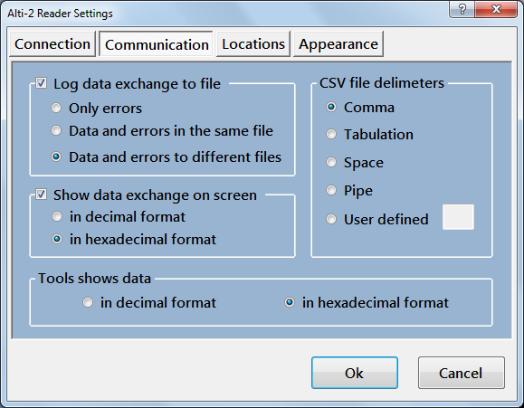

On this page You can set parameters of communication behavior.
You can store detailed logs of communication in text files. To do this check Log data exchange to file box. Locations of these files are set on Locations page.
Also You can see data exchange between device and host on the screen. To do it always when communicate with device check Show data exchange box and choose digits format.
You can save logbook jumps detailed information to ASCII text file with delimeters. You can choose here what kind of delimeter to use.
I provide tool for discover device memory. Here You can set digits format showing data in this tool.
Created with the Personal Edition of HelpNDoc: Free Web Help generator